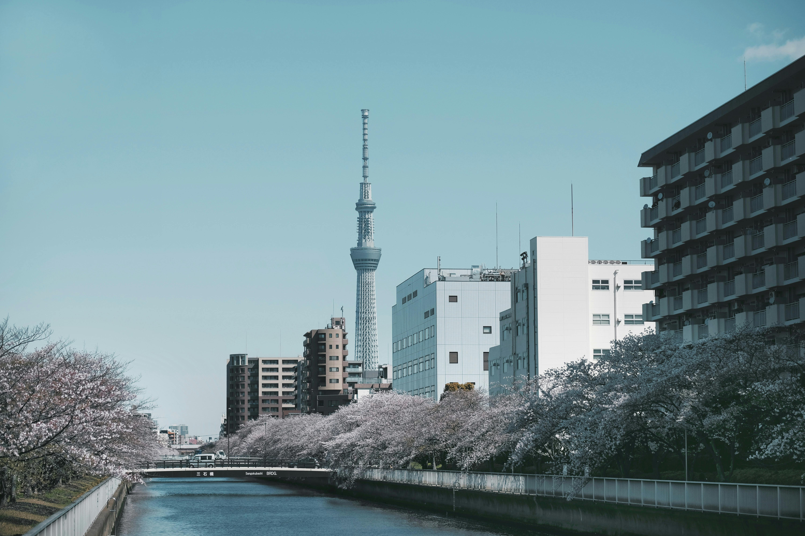
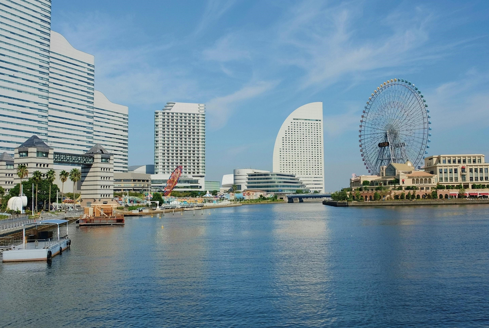

Великі міста Японії

Токіо
Токіо — мегаполіс, що ніколи не спить.
Сяючі неонові вулиці, суцільна рухота
та смак вишуканої кухні роблять
його серцем Японії.
Сяючі неонові вулиці, суцільна рухота
та смак вишуканої кухні роблять
його серцем Японії.

Осака
Осака — динамічне місто, де сучасність
зустрічається з традиціями. Безмежні торгові
вулиці, вишукана архітектура та гастрономічні
смаколики чекають на кожному кроці.
зустрічається з традиціями. Безмежні торгові
вулиці, вишукана архітектура та гастрономічні
смаколики чекають на кожному кроці.

Йокогама
Йокогама — місто, що б'є рекорди. Знамените
портове місто Йокогама славиться своєю
величезною кількістю хмарочосів, шумними
вулицями та багатою морською культурою.
портове місто Йокогама славиться своєю
величезною кількістю хмарочосів, шумними
вулицями та багатою морською культурою.